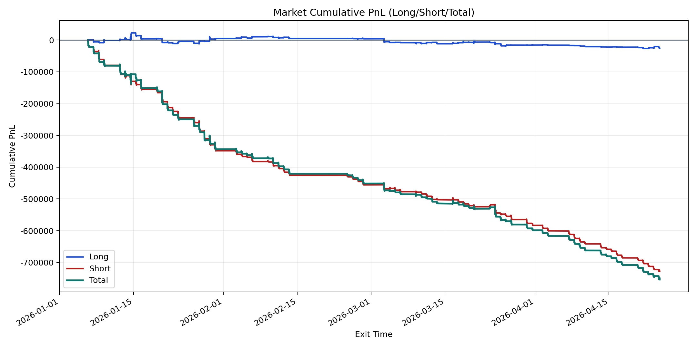
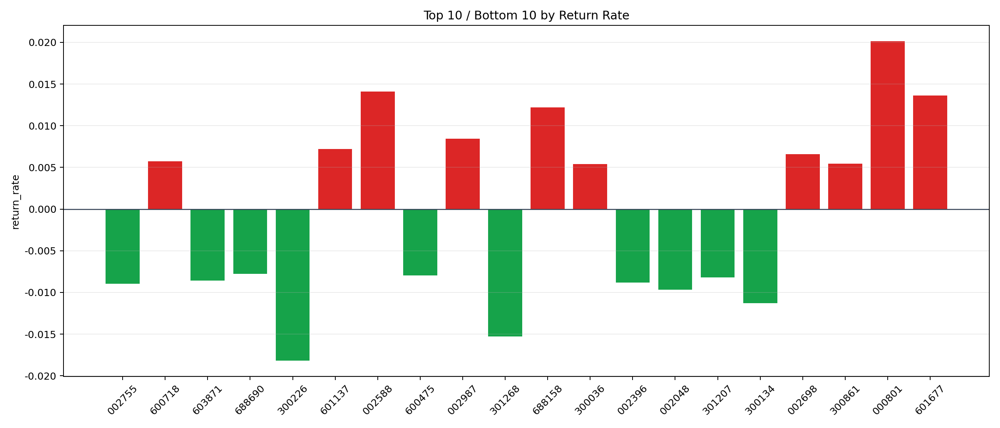

| repo_root | /home/haoranyou/data/output/dynamic_AUM_TAKER_index1000 |
|---|---|
| period_months | 12 |
| period_label | 2026-01-06_to_2026-04-24 |
| start_time | 2026-01-06 09:47:52 |
| end_time | 2026-04-24 14:45:22 |
| n_trades | 32530 |
| n_symbols | 443 |
| total_pnl | -753552.0826000046 |
| long_total_pnl | -25542.87864999796 |
| short_total_pnl | -728009.2039500066 |
| total_entry_notional | 565297417.0 |
| long_entry_notional | 120881991.0 |
| short_entry_notional | 444415426.0 |
| total_return_rate | -0.001333018796723079 |
| long_return_rate | -0.00021130425168127784 |
| short_return_rate | -0.0016381276646999347 |
| top_symbols_by_return | ["000801", "002588", "601677", "688158", "002987", "601137", "002698", "600718", "300861", "300036"] |
| bottom_symbols_by_return | ["300226", "301268", "300134", "002048", "002755", "002396", "603871", "301207", "600475", "688690"] |

